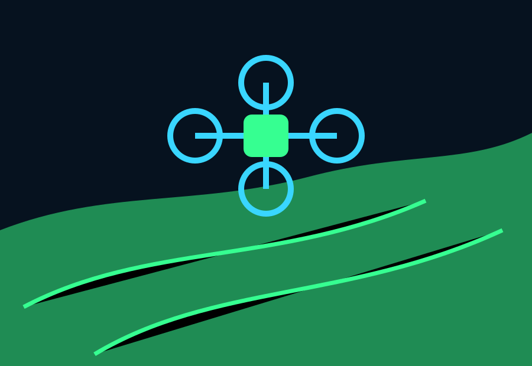
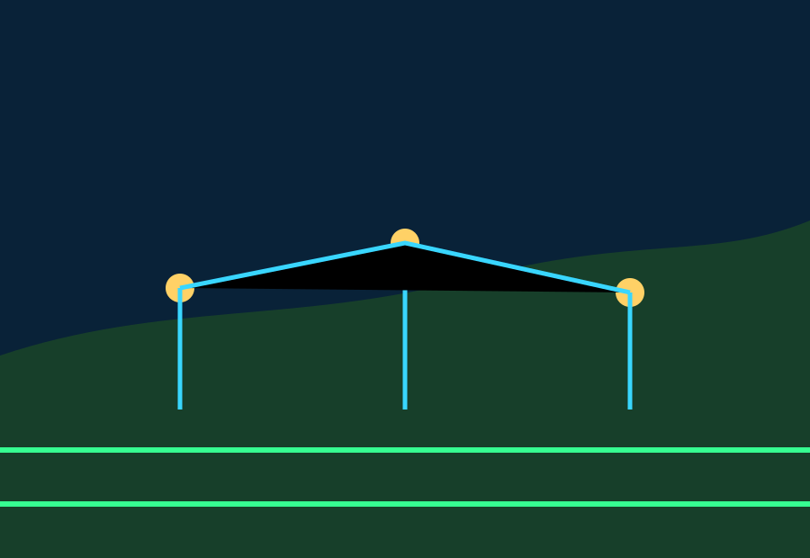
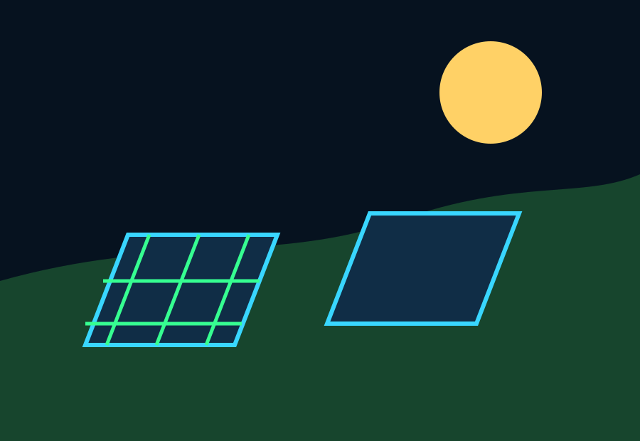
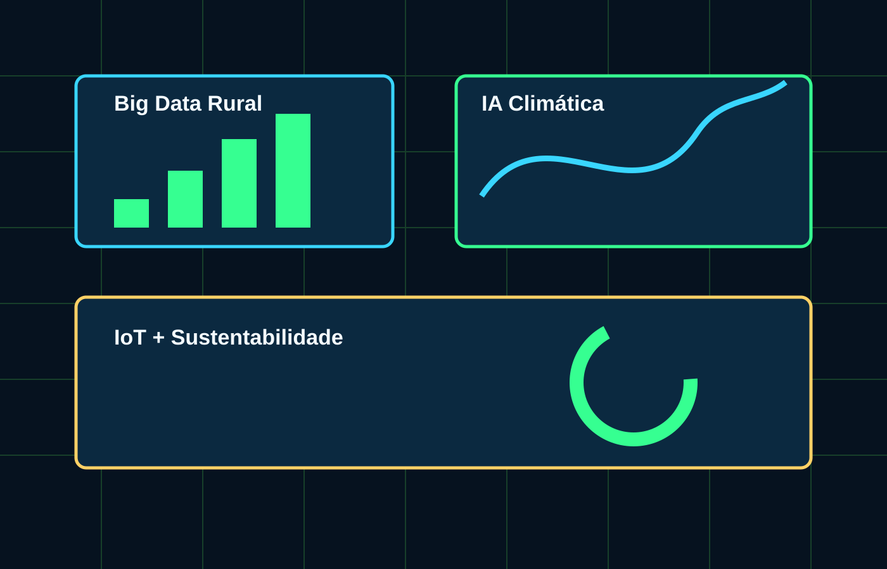

Drones de Campo
Voam pelas plantações tirando fotos térmicas em tempo real, achando pragas escondidas e ajudando a aplicar bioinsumos só onde precisa.
Equipamentos do Amanhã
A agricultura de precisão usa a ciência para evitar o desperdício de insumos, ajudar o produtor nas decisões diárias e respeitar de verdade os ciclos da natureza.
Voam pelas plantações tirando fotos térmicas em tempo real, achando pragas escondidas e ajudando a aplicar bioinsumos só onde precisa.
Cruza o histórico do clima com os dados captados direto da terra para prever tempestades e dizer qual o momento perfeito para o plantio.
Transformam os raios de sol e até os restos orgânicos dos animais em eletricidade limpa, gerando economia pesada para as famílias do campo.
O que a gente aprendeu sobre isso estudando a fundo a revolução tecnológica no campo quebrou todos os nossos preconceitos sobre o que é morar e trabalhar na roça. Nas matérias de física, química e biologia, a gente costuma ver conceitos isolados, mas na agricultura de precisão tudo se conecta de uma forma fantástica. Nós descobrimos que o manejo de drones e o uso de dados de sensores não são frescura de fazenda grande; são ferramentas essenciais de ecologia aplicada. Quando um robô ou um drone mapeia o índice de clorofila das folhas em tempo real, o agricultor não joga defensivos químicos ou adubo em toda a lavoura de forma cega. Ele vai direto no foco do problema. Isso significa que toneladas de substâncias deixam de ser jogadas no solo, protegendo a vida dos lençóis freáticos e dos polinizadores locais.
Por que isso é importante no nosso dia a dia? Na nossa realidade de estudantes que vivem e convivem com o ritmo do oeste do Paraná, entender a tecnologia rural nos prepara para o mercado de trabalho real, que está cada vez mais automatizado e dependente de mentes que entendam de programação e análise de dados. As placas solares e os biodigestores que geram energia a partir de resíduos orgânicos mostram que a sustentabilidade também mexe com o bolso, diminuindo os custos de produção e gerando uma autossuficiência energética incrível.
O resumo do que foi estudado nessa primeira parte deixa claro que o futuro do agronegócio não combina mais com desperdício ou destruição irracional. A inovação tecnológica serve como uma ponte perfeita para unir a alta produtividade que alimenta o mundo com o respeito total ao meio ambiente. Como alunos montando este projeto web para o Agrinho 2026, documentar essa evolução é uma forma de mostrar que a tecnologia de ponta e a preservação ambiental andam de mãos dadas, redefinindo o papel das propriedades rurais na preservação do nosso ecossistema.
Painel Visual



Mentes e Máquinas
Sistemas inteligentes, tratores autônomos, Big Data e a Internet das Coisas nos ajudam a enxergar pequenos detalhes que antes ninguém via: a umidade exata de cada pedaço de chão, o início de uma praga e o dia certo para colher.
Softwares inteligentes calculam dados históricos do tempo para controlar a irrigação sem gastar uma gota à toa.
Tratores guiados por satélite fazem o plantio perfeito, evitando amassar o solo e estragar a terra.
Montanhas de relatórios antigos viram gráficos fáceis que mostram as tendências do mercado e do clima.
Dispositivos fincados na lavoura avisam direto no celular como está a saúde das plantas minuto a minuto.
O que a gente aprendeu sobre isso analisando o funcionamento dessas tecnologias avançadas, como o Big Data Rural e os sensores IoT, é que a informação virou o insumo mais valioso para o agricultor moderno. Nas nossas aulas de matemática e informática na escola, muitas vezes ficamos resolvendo fórmulas teóricas sem saber onde aplicar, mas ver esses algoritmos funcionando na prática do campo muda tudo. Nós entendemos que a conectividade total — a chamada Internet das Coisas — permite escutar o que o solo e as plantas estão precisando quase em tempo real. Os sensores coletam dados sobre nutrientes, temperatura e compactação da terra, enviando relatórios para sistemas de inteligência artificial que guiam os tratores robóticos para trabalhar de forma milimétrica.
Por que isso é tão importante no nosso dia a dia de estudantes? Porque escancara o fato de que a tecnologia não serve apenas para criar aplicativos de entretenimento ou redes sociais, mas para resolver problemas gigantescos da humanidade, como a segurança alimentar e a escassez de água potável. Quando as máquinas autônomas evitam a compactação excessiva do solo e calibram a irrigação com base em modelos de previsão matemática, a economia de recursos hídricos e minerais é absurda. É a ciência aplicada transformando o campo em um ecossistema inteligente de alta eficiência e baixo impacto ecológico.
O resumo do que foi estudado mostra que o manejo inteligente do campo cria uma barreira real contra as crises ambientais globais. Juntar dados históricos com ações preventivas no solo salva colheitas inteiras sem a necessidade de desmatar novas áreas para expandir a produção. Para nós, programadores e estudantes focados no Agrinho, fazer este painel digital e entender como os fluxos de dados salvam recursos naturais nos dá um orgulho enorme e prova de uma vez por todas que o conhecimento técnico é a maior ferramenta de preservação que a nossa geração possui.
Painel Estatístico
